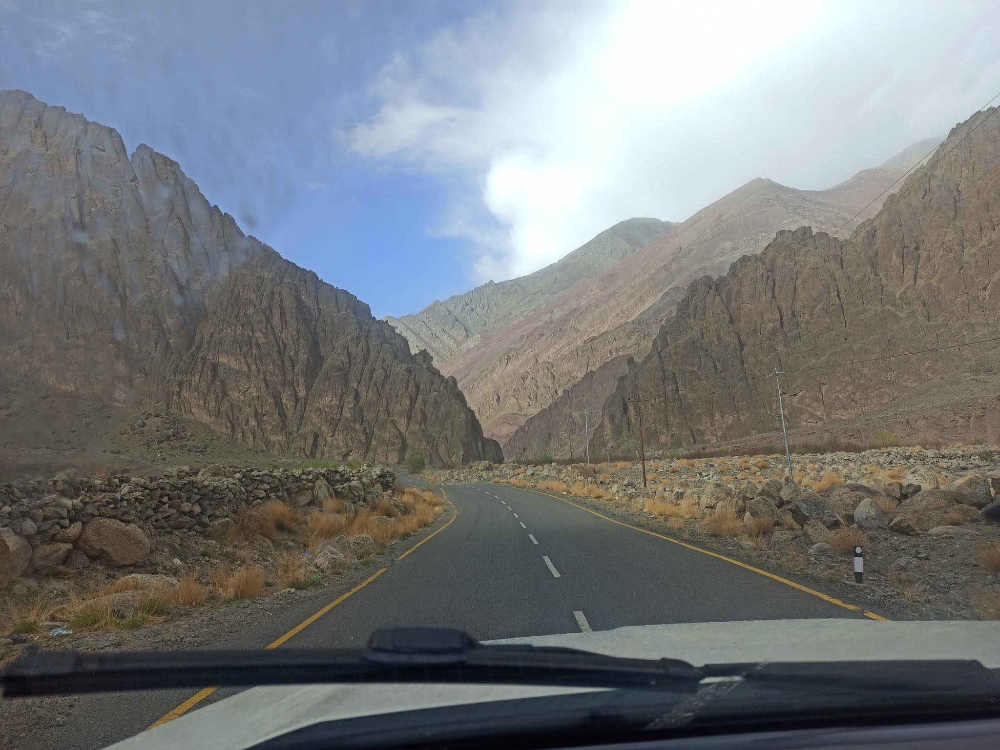
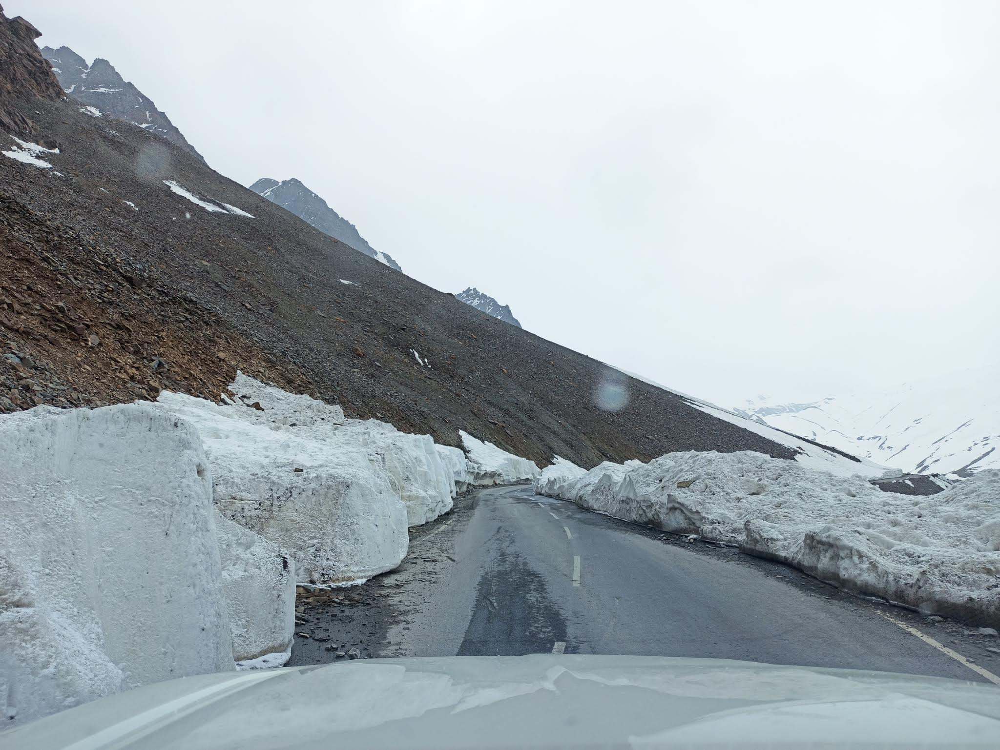
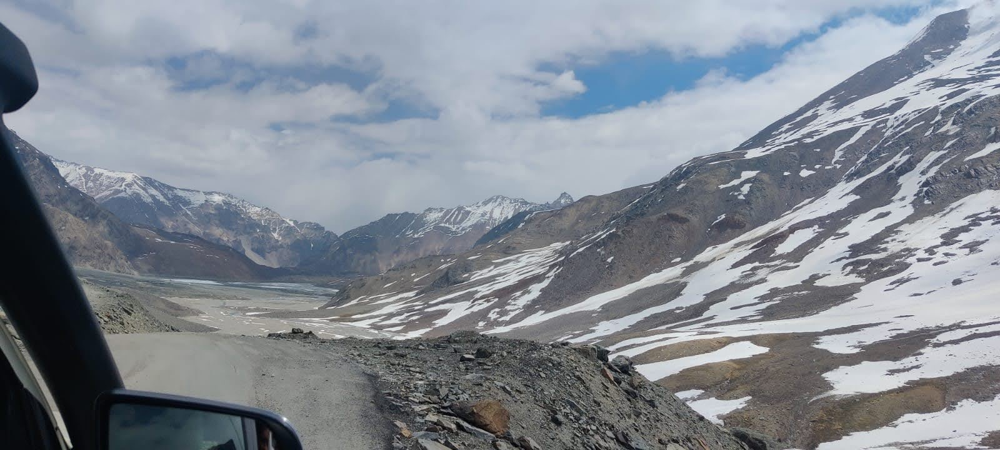
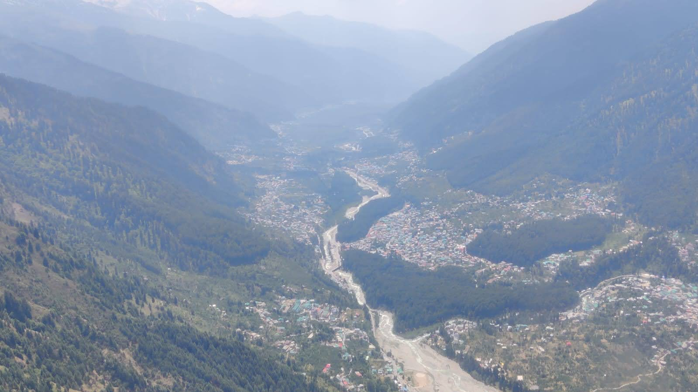
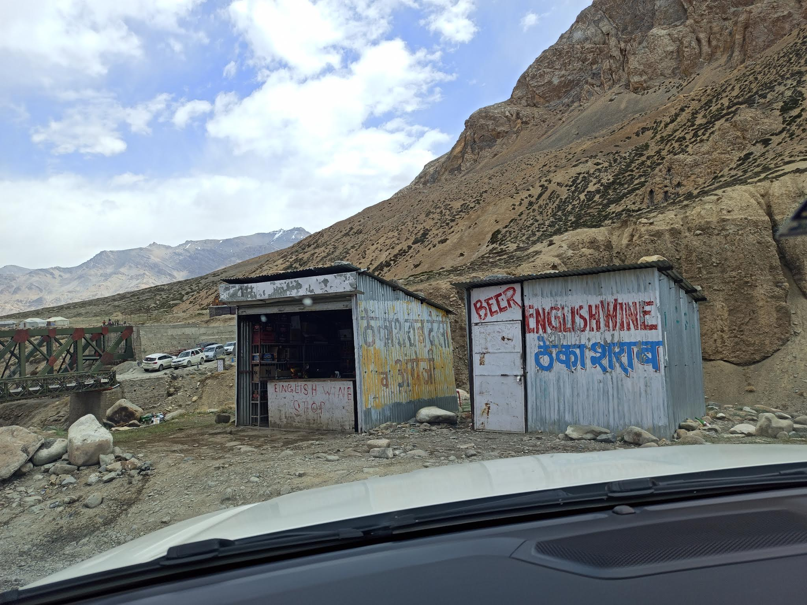

The trouble with a road trip across India is that it keeps changing the subject. You set off from Kerala thinking about distance, fuel, and how many hours you can tolerate in a car. A few states later, the landscape has quietly taken over the conversation. The coconut palms thin out, the air changes, the food changes, the language changes, and the country refuses to remain the single, tidy noun we use for it.
Going from Kerala to Ladakh and back by road is less a holiday than an extended lesson in scale. On a map, the route is a line. On the ground, it is a succession of small worlds, each with its own weather, pace, assumptions and ways of getting through the day. The journey makes a mockery of the idea that India can be explained by one election result, one television argument, one cuisine, or one confident person with a microphone.

A road through the mountains, where the scenery does not need a caption to make its point.
Kerala gives you green in layers: trees, wet earth, backwaters, the general sense that water is never very far away. Ladakh offers the opposite proposition. The mountains are exposed down to their bones. The colours are mineral and spare; the sky seems too large for the road beneath it. Even the idea of a roadside stop changes when the next one may be a long way off and the weather is not interested in your itinerary.

Snow banks beside the road. The mountain gets the final say on your timetable.
There is a particular humility in driving through terrain that makes human infrastructure look temporary. A road is an extraordinary achievement here, but it is also a thin argument made against rock, altitude and weather. You appreciate the engineering, then immediately appreciate how little control engineering actually buys you. The road exists because people keep it open; it does not follow that it owes you a smooth passage.

A valley opening out between the ridgelines.
That is one of the quiet pleasures of travelling across several states: your own habits stop looking universal. The way you eat, complain, plan, queue, bargain or interpret a stranger's expression is only one local operating system among many. Some things are shared everywhere — fatigue, hospitality, impatience, the instinct to help when a problem becomes concrete — but they are expressed through different customs and different constraints. The country is held together as much by these ordinary negotiations as by anything written on a map.

From above, the settlement and river look almost like a diagram. Down there, they are somebody’s entire world.
It is tempting to turn a journey like this into a grand statement about unity in diversity. The phrase is not wrong; it is just too polished for the lived version. The lived version involves roadworks, changing temperatures, unfamiliar meals, practical decisions, and the discovery that the person who has the information you need may speak a language you do not. Diversity is not a decorative montage. It is the daily business of figuring one another out.

A roadside shop in the mountains: civilisation, in one very useful form.
There is politics in all of this, of course. The national conversation increasingly asks people to sort themselves into camps — modern or traditional, nationalist or anti-national, left or right — as if a person were a single opinion with a postal address. But the road is a poor place for that kind of simplification. People need roads that hold, bridges that last, clinics that function, schools that teach and officials who can get a permit processed without making a small ceremony of it. Those are not left-wing or right-wing needs. The arguments are about how to provide them, who pays, who benefits, and who gets left waiting.
Travel does not make these questions disappear. It makes abstractions harder to maintain. Infrastructure is not a slogan when you are depending on it; geography is not a metaphor when it determines how far a child is from a hospital or how reliably supplies arrive. The same is true of climate. A change in weather is not an aesthetic detail to someone whose livelihood depends on it. In the mountains, the environment is not scenery behind human life. It is one of the main characters.
By the time we turned back towards Kerala, the country had become both larger and more intimate. Larger, because the distances and differences were more vivid than they had been before. More intimate, because the details — a shop, a road crew, a settlement tucked into a valley — had given the abstractions somewhere to live. You can read a great deal about India without leaving your chair. It is still useful, occasionally, to put the chair in a car and keep driving.
The best part of a road trip is not that it settles an argument about a place. It is that it gives you more precise questions to take home. And, if you have planned badly enough, a renewed respect for the people who know where the next petrol pump is.